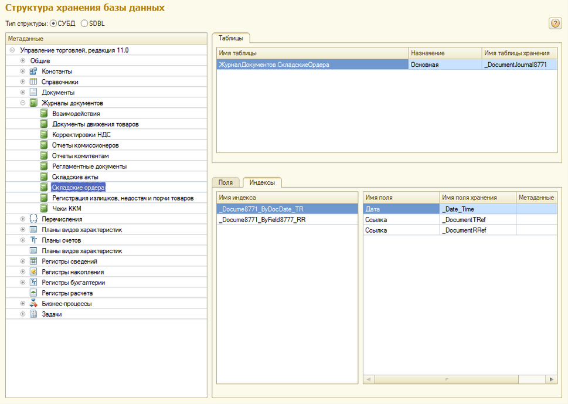
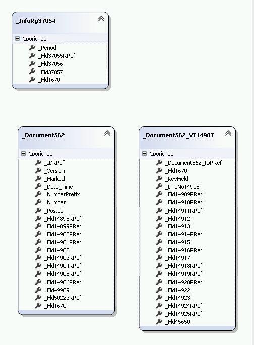
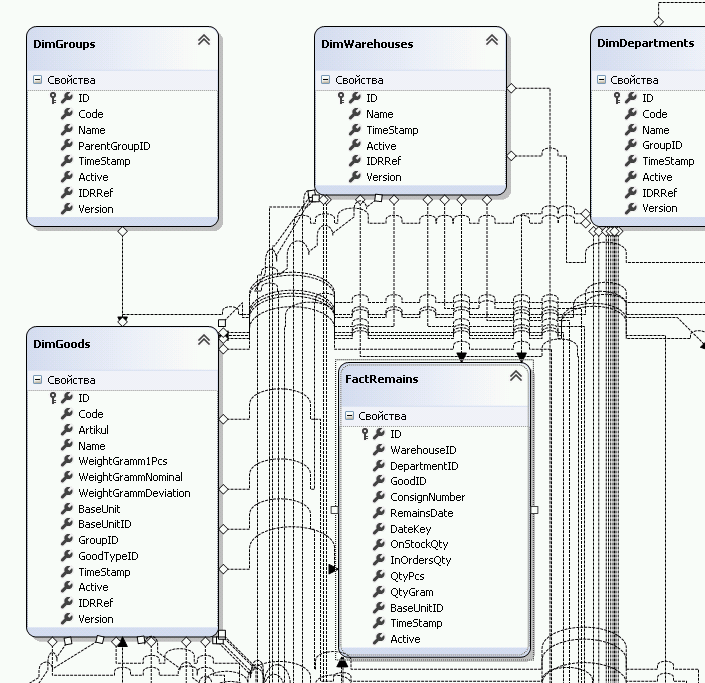
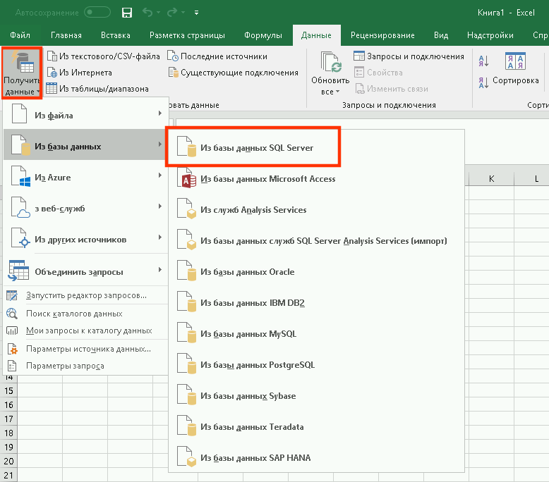
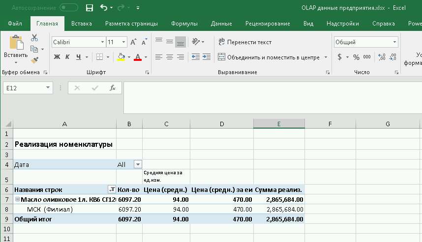

Как программистам так и пользователям известно, как долго и сложно создаются отчеты в 1C. Однако, мы можем предложить на рассмотрение не стандартное решение - это загрузка данных в OLAP. OLAP - онлайн аналитическая отчетность для предприятий с возможностью построения таблиц и графиков. Для тех, кто это попробовал, оказалось экстремально удобным средством для построения аналитической отчетности в Microsoft Excel, как говорится, привычным способом для рядовых пользователей на предприятиях использующих 1С:ERP.
В нашем примере мы будем использовать Visual Studio C#, 2 базы данных Microsoft SQL - одна это 1С:ERP и вторая для аналитической отчетности, а так-же сводные таблицы в Microsoft Excel.
Чтобы получить информацию о таблицах и структуре базы данных 1C:ERP будем использовать готовые обработки, которые уже есть в интернет (GetDatabaseStructure.epf или base_structure82.epf).
При помощи такого инструмента мы увидим список полей для объектов 1С (справочники, документы, строки документов, перечисления и т.п.) и их назначение, это нам пригодится в дальнейшем для программирования загрузки данных в OLAP. На основе полученных данных мы подготовим таблицы в нашей отдельной базе данных для аналитической отчетности в Microsoft SQL.
В Visual Studio добавим структуру таблиц 1С в Linq to SQL:
Накинем еще структуру таблиц нашей аналитической базы в Linq to SQL:
Создаем класс в Visual Studio для перегрузки данных из структуры 1C в структуру OLAP
1 2 3 4 5 6 7 8 9 10 11 12 13 | public class DocProductionImporter { DataClasses1DataContext dataContext; s1_DataClasses1DataContext dataContextS1; public DocProductionImporter() { dataContext = new DataClasses1DataContext(); dataContextS1 = new s1_DataClasses1DataContext(); } .... } |
Загрузим в память список идентификаторов документов 1С, уже имеющихся в базе OLAP. Уникальность документов в 1C поддерживается в основном при помощи IDRRef и Version. Tuple поможет нам создать составной индекс, при необходимости.
Заполним индексы из таблицы SQL:
1 2 3 4 5 6 7 8 | HashSet<Tuple<System.Data.Linq.Binary, // IDRRef, Version System.Data.Linq.Binary>> fndDocVer = new HashSet<Tuple<System.Data.Linq.Binary, System.Data.Linq.Binary>>(); foreach (DocProduction doc in docs) { fndDocVer.Add(Tuple.Create(doc.IDRRef, doc.Version)); } |
Делаем выборку документов из 1C:ERP и проверяем их наличие в нашей базе OLAP. Поле _Version содержит значение для сверки модифицированности документа в 1C.
1 2 3 4 5 6 7 8 9 10 11 12 13 14 | var prodDocs = from c in dataContextS1._Document581s where c._Posted == posted select c; int i = 0; foreach (_Document581 doc in prodDocs) { if (fndDocVer.Contains(Tuple.Create(doc._IDRRef, doc._Version)) == true) { i++; continue; } .... |
Создадим новый или обновим существующий документ
1 2 3 4 | // NEW DocProduction dp = new DocProduction(); dp.NumberPrefix = doc._NumberPrefix; dp.DocNumber = doc._Number; |
Внутри цикла по документам ссылки на справочники и друге объекты подбираем из dictionary.
Заполним dictionary для последующего поиска в памяти (значительно ускоряет процесс, по сравнению с поиском из таблиц БД SQL):
1 2 3 4 5 6 7 8 9 10 11 12 13 14 15 16 17 | Dictionary<System.Data.Linq.Binary, Int64> fndDepartments = new Dictionary<System.Data.Linq.Binary, Int64>(); var fDepartments = from g in dataContext.DimDepartments select g; foreach (DimDepartments fd in fDepartments) { fndDepartments.Add(fd.IDRRef, fd.ID); // ИД в 1С и ИД в OLAP } <p>Подбирем элемент справочника в процессе загрузки документов:</p> if (fndDepartments.ContainsKey(doc._Fld15867RRef)) { Int64 val; fndDepartments.TryGetValue(doc._Fld15867RRef, out val); dp.DepartmentID = val; } else throw new Exception(); // Не нашли значение в справочнике |
В конце работы модуля сохраним документ в БД OLAP:
1 2 3 4 5 6 7 8 9 | dp.IDRRef = doc._IDRRef;
dp.Version = doc._Version;
if (doc._Posted == posted) // Значение проведения документа в 1С
dp.Active = true;
else
dp.Active = false;
dataContext.DocProductions.InsertOnSubmit(dp);
dataContext.SubmitChanges();
|
На этом работа в Visual Studio по заполнению табличек закончена, переходим к сводным таблицам в Excel. Добавляем новую сводную таблицу:
Рисуем таблицу в Excel добавляя нужные поля в табличную часть, результат должен быть следующим (примерный вариант):
Мы рассмотрели краткий пример загрузки данных в отдельную базу данных SQL для формирования аналитической отчетности в OLAP и Excel. Полученный в процессе такой разработки набор срезов и показателей готов в к тому, чтобы его использовал конечный пользователь в сводной таблице Microsoft Excel добавляя формируя тем самым, требуемую отчетность без прямого участия программиста.